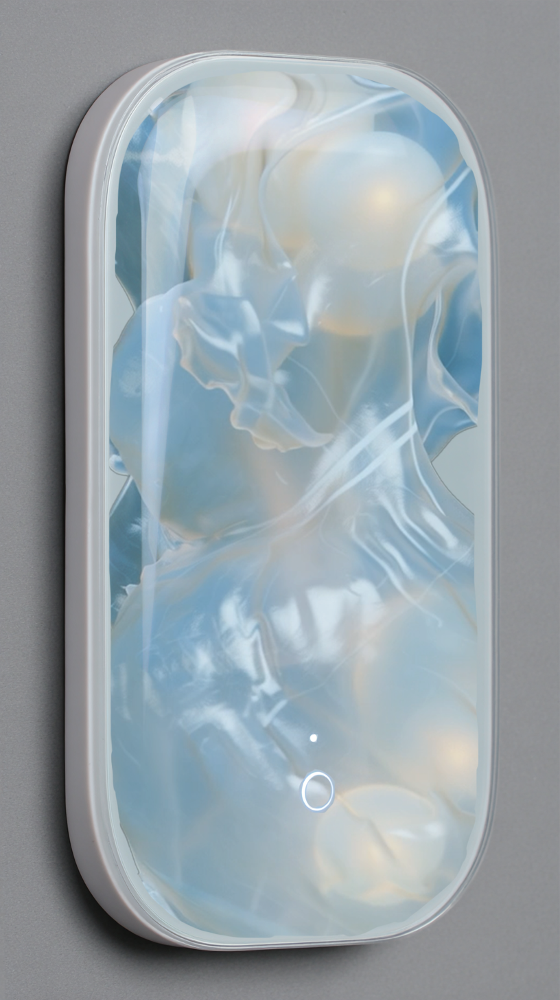
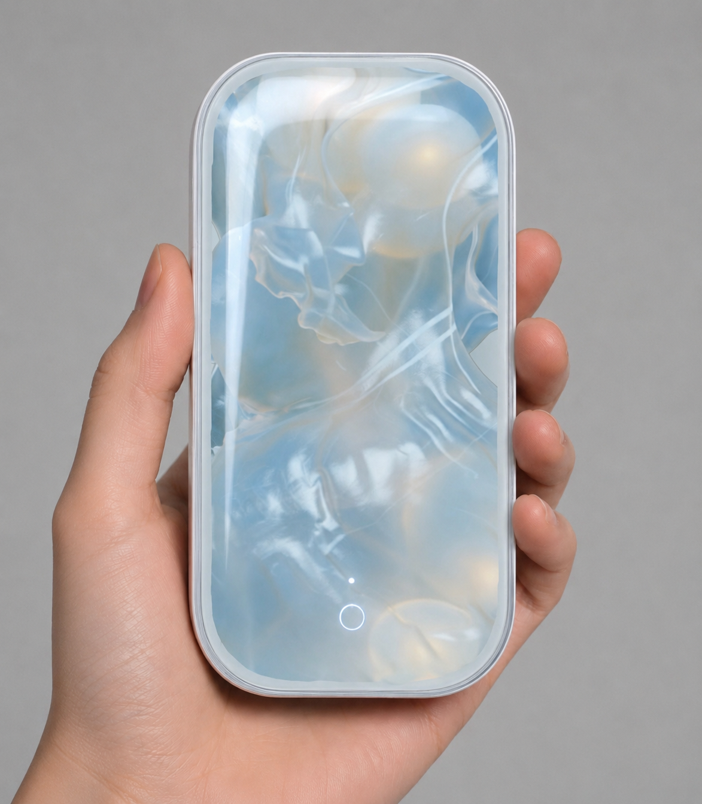
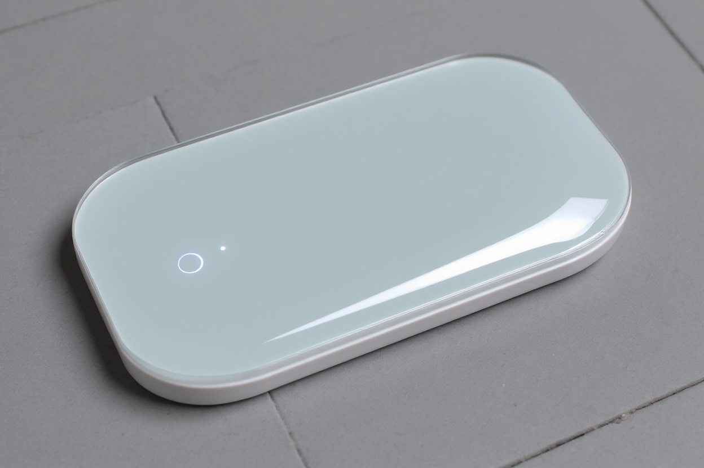

Aftertone, 2026(-ing)
Design Research / Moving Image / Speculative Object / In Progress


Aftertone is an ongoing design research project exploring how ambiguous and layered feelings can become perceptible before they are clearly understood or named.
Concept / Design Research / Interaction Direction / Visual System / Speculative Object
Moving Image / Sound / Speculative Device / AI-assisted Visual Studies
In Progress / Ongoing Research / Prototype Development
Manifesto
Not everything we feel has a name.
Some experiences are sensed before they can be clearly explained.
Aftertone begins in that uncertain space.
Rather than asking what a feeling is, the project explores how it might first become noticeable through atmosphere, movement, sound, density, tension, and change.
It is an ongoing exploration of emotional awareness before clear definition.
Research Question
How might we create space for people to notice layered or ambiguous feelings before they become clearly understood or named?
Aftertone is less interested in identifying emotion than in the moment before identification, when something is already present but still uncertain.
Approach
Aftertone does not treat emotion as a fixed label to be detected.
Instead, the project explores emotional experience through sensory qualities such as intensity, density, tension, ambiguity, movement, distance, warmth, and persistence.
Within this design framework, these qualities can become visual and sonic behaviors rather than emotional categories. The aim is not to tell the user what they feel, but to create a sensory reflection that can be observed.
Experience
- Speak
- Listen
- Transform
- Observe
- Reflect
A person speaks about a memory, situation, or experience that has stayed with them.
Instead of returning an emotional score or diagnosis, the system translates aspects of the spoken atmosphere into a short sensory response. The response may take the form of moving image, sound, or an abstract visual behavior.
It is not intended as an answer. It becomes a surface for observation.
Device Prototype
The current prototype explores Aftertone as a dedicated reflection device.
The object is designed as a quiet, single-purpose interface rather than a conventional media player or smartphone. A spoken memory is recorded through a minimal interaction, while the display acts less like an information screen and more like an observation window for the resulting sensory reflection.
The device is one manifestation of the broader Aftertone research, rather than the project itself.

Visual Studies
Alongside the device, Aftertone develops an ongoing series of moving-image studies.
These works do not represent specific emotions. They explore different conditions in which a feeling may become perceptible: unnamed, barely noticeable, lingering, diffuse, suspended, or slowly dissolving.
The visual language is intentionally abstract. Form, material, movement, atmosphere, and time are used as ways of thinking about emotional presence.
Study 01 — The Unnamed
A study of feelings before clear definition.
The Unnamed begins with a simple condition:
something is already present,
but we do not yet know what to call it.
The study explores an uncertain felt presence through a translucent membrane and an unstable internal form.
The form is not sadness, anxiety, joy, or any other emotional category. It remains deliberately unresolved.
Its surface tension, internal pressure, subtle movement, and shifting density become ways of visualizing a feeling before it settles into a name.
Ongoing Studies
Aftertone is structured as an expanding visual research archive.
Future studies will continue to explore different modes of emotional presence.
- Quiet Signals In development
- how a feeling first appears through subtle, local signals
- Inner Weather In development
- how a feeling can be experienced as atmosphere rather than object
- Echo In development
- what remains after the immediate feeling has passed
Position
Aftertone does not diagnose emotion.
It does not classify the user or decide what they feel. The project is not presented as a therapeutic or clinical system.
Its purpose is exploratory: to investigate how sensory reflection might create a small distance between having an experience and immediately defining or reacting to it.
The resulting images, sounds, and objects are interpretations, not measurements.